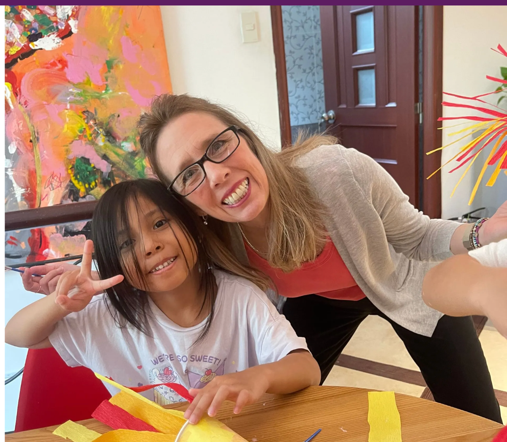

Answers to Common Parent Questions
Every parent has questions: Is my child reading at the right level? How much should they read each day? Why do they struggle with writing? Should they start IELTS preparation?
Ask a Teacher is Spark's parent advice center. Our teaching team answers some of the most common questions we receive from families about literacy, reading, writing, vocabulary, academic English and educational development.


Have a Question About Your Child's Learning?
Submit your question and a member of the Spark teaching team will answer it — personally, and often in a future Teacher's Corner article. Questions may relate to:
Popular Questions
Many parents have similar questions about reading, writing, academic English and school success. Explore the answers below for practical insights from our teaching team.
My child hates reading. What should I do?
Start smaller than feels necessary — a shared five-minute picture book, a comic, or reading aloud together with no pressure to finish. The goal at first is simply making books feel low-stakes and enjoyable again, not catching up on levels.
What is reading age?
Reading age is a score that compares a child's reading ability to the average ability of children their age, based on accuracy, fluency and comprehension. It's a useful signal, not a label — a starting point for planning support.
Is my child's reading level appropriate?
Use the five-finger rule: on one page, count words your child can't read. Zero to one is too easy, two to three is the ideal growth zone, four or more is too hard for independent reading.
How much should my child read each day?
Fifteen focused minutes a day is enough to build strong reading habits for most primary-age children — consistency matters far more than length.
When should my child prepare for IELTS?
Most students begin structured IELTS preparation 3–6 months before they need a score for university or visa applications, once their general academic English is solid.
Why does my child struggle with writing?
Writing struggles are often about structure, not vocabulary — many students who speak and read well still haven't been taught how to organize a paragraph or essay explicitly.
Can phonics help older students?
Yes. Older students with phonics gaps catch up quickly once the foundation is filled in explicitly, at an age-appropriate pace and pitch.
Still Have a Question?
If you have a question about reading, writing, phonics, academic English or international school expectations, we'd love to hear from you — and may feature it in a future article.
Send Us Your QuestionBook a Free Assessment
A one-to-one conversation with a Spark teacher can answer questions specific to your child.